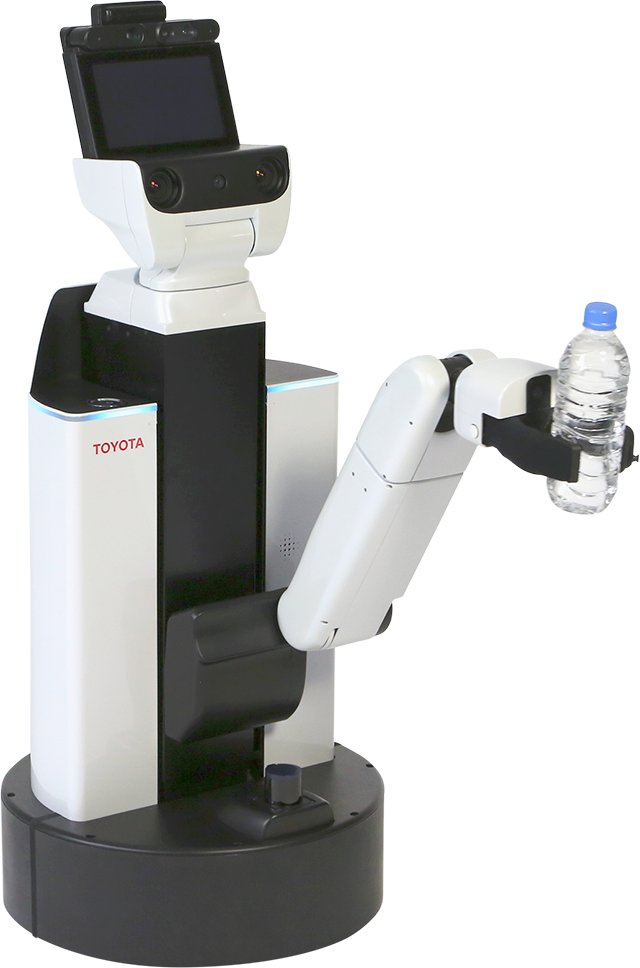
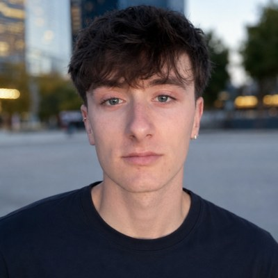

Fine-Tuning Vision-Language-Action Models for 11-DoF Mobile Manipulation
1Vision for Robotics Lab (V4R), ACIN, TU Wien · 2Universitat Jaume I
Three trials from the workshop track, each clip start to finish. Head camera, hand camera and third-person view, side by side, at 2× speed.
Vision-Language-Action models are usually evaluated offline with a single mean-squared error over the full action vector. For the Toyota Human Support Robot, with 11 degrees of freedom split across four functionally different joint groups (arm, gripper, head, base), that single number hides which group is actually driving the error.
We decompose the offline MSE into the four joint groups and use the decomposition as a checkpoint-selection signal. In a 60-trial real-robot evaluation against three models, the arm-MSE ranking matched the robot ranking, while the total-MSE ranking did not. The π₀.₅ fine-tune built on this analysis won the AIRoA VLA Pipeline Competition at the ICRA 2026 workshop.
The HSR has 11 degrees of freedom split across four functionally different joint groups. A 5-DoF arm, a 1-DoF parallel gripper, a 2-DoF head, and a 3-DoF holonomic base. The four groups have very different scales and dynamics, which is what motivates the per-group decomposition.

Hover or tap a marker on the robot to see what each group does and how hard it is to learn.
head_pan · head_tilt
Points the RGB-D camera. Small range, slow motion, and the easiest group to learn.
hand_motor
Parallel jaw, essentially binary. Its error concentrates on the open-close transitions and falls fast during fine-tuning.
arm_lift · arm_flex · arm_roll · wrist_flex · wrist_roll
Carries most of the manipulation signal. The arm-MSE ranking is the one that matched the robot ranking in our 60 trials.
base_x · base_y · base_theta
Holonomic, continuous navigation. SmolVLA had no base pretraining, so this group converges last and sets the ceiling on total MSE.
We start from the released SmolVLA backbone and run a generalist phase on the public AIRoA MoMa dataset, which teaches the model the HSR observation layout and the 11-DoF action space. We then continue with a task-specific top-up on a private subset of the AIRoA ICRA 2026 dataset distributed only to the competing teams. For π₀.₅ we use an expert-only fine-tune on top of the workshop baseline.
All offline evaluation is done with our per-group MSE script, which slices the squared error into arm, gripper, head and base rather than averaging the four blindly.
The four joint groups converge at very different rates. The gripper falls fast, the head is small and stable, the arm carries most of the manipulation signal, and the base converges last and sets the ceiling on total MSE. Aggregating the four together blends them into a single number whose ranking does not reflect the on-robot ranking.
| Model | Total MSE (×10⁻³) | Arm MSE (×10⁻³) | Robot score |
|---|---|---|---|
| π₀.₅ baseline (80k) | 1.04 | 0.30 | 4.00 / 4 |
| π₀.₅ (ours) | 0.95 | 0.59 | 3.75 / 4 |
| HSR-SmolVLA (40k) | 1.61 | 0.88 | 3.50 / 4 |
Robot score is the mean over 20 trials per model on a 4-point rubric. Mann-Whitney U (one-sided), p ≤ 0.010 between the π₀.₅ baseline and either fine-tuned model. The lowest total MSE is not the best policy on the robot, while the arm-MSE column matches the robot ranking. The 60 raw scores and the script that recomputes these statistics are in the repository.
The per-group decomposition is not only a diagnostic. The same analysis can be brought into the training loop itself, for example by weighting the joint groups in the action loss so the optimizer spends its capacity where the robot actually needs it, or by scheduling that weighting as the groups converge at different rates. We are actively investigating this direction and it will be the subject of upcoming work.

The paper is the result of a collaboration at the Vision for Robotics Lab between Pau Montagut Bofi, Mario García Blasco, Tessa Pulli and Markus Vincze. The V4R lab provided access to the Toyota HSR and the GPU infrastructure used for training and offline evaluation.
@inproceedings{montagut2026pergroup,
title = {Per-Group Error, Not Total {MSE}: Fine-Tuning Vision-Language-Action
Models for 11-{DoF} Mobile Manipulation},
author = {Montagut Bofi, Pau and Garc\'ia Blasco, Mario and
Pulli, Tessa and Vincze, Markus},
booktitle = {ICRA 2026 Workshop on From Data to Decisions},
year = {2026},
eprint = {2606.00253},
archivePrefix = {arXiv},
primaryClass = {cs.RO},
url = {https://arxiv.org/abs/2606.00253}
}